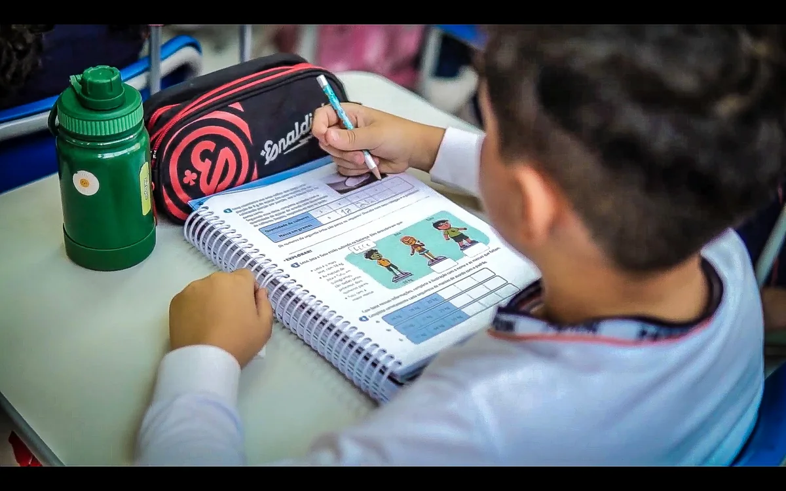
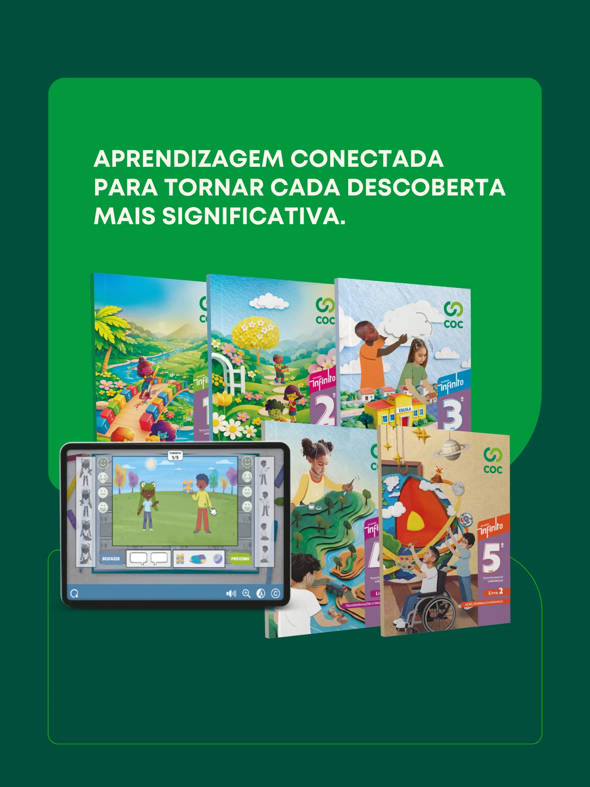
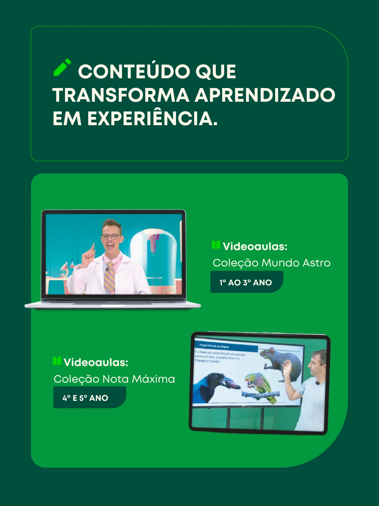
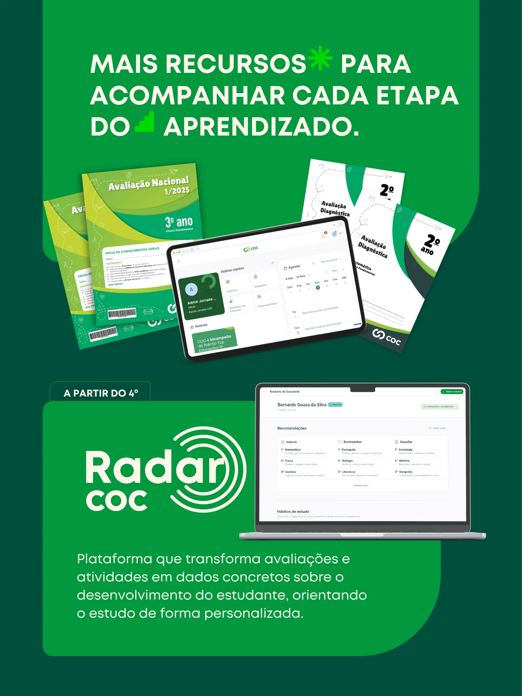
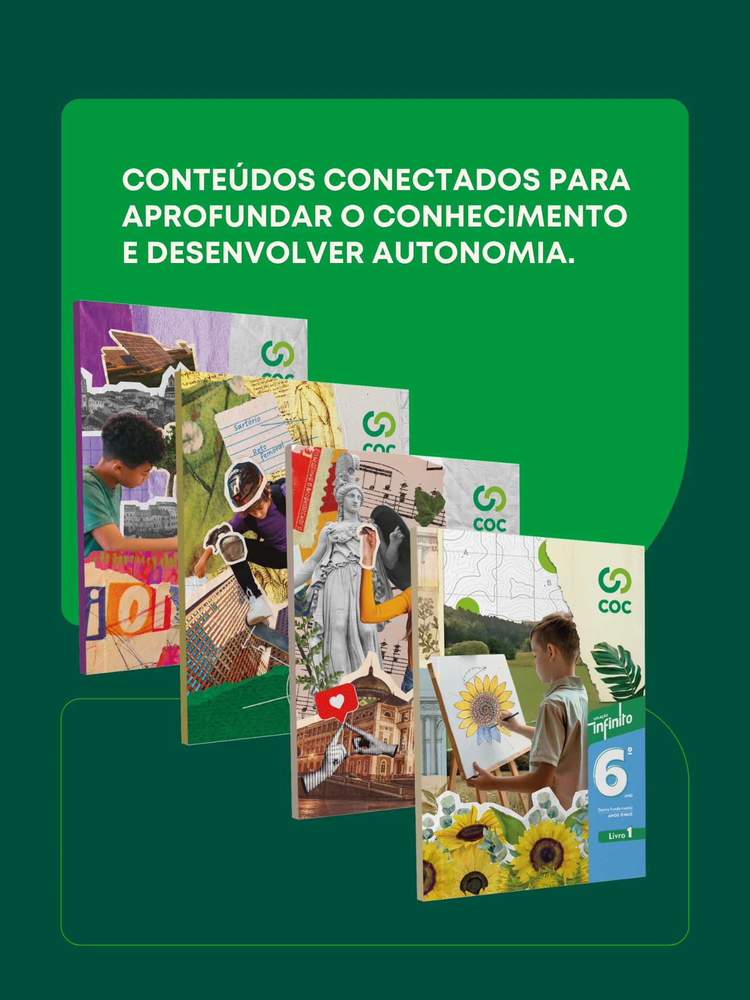
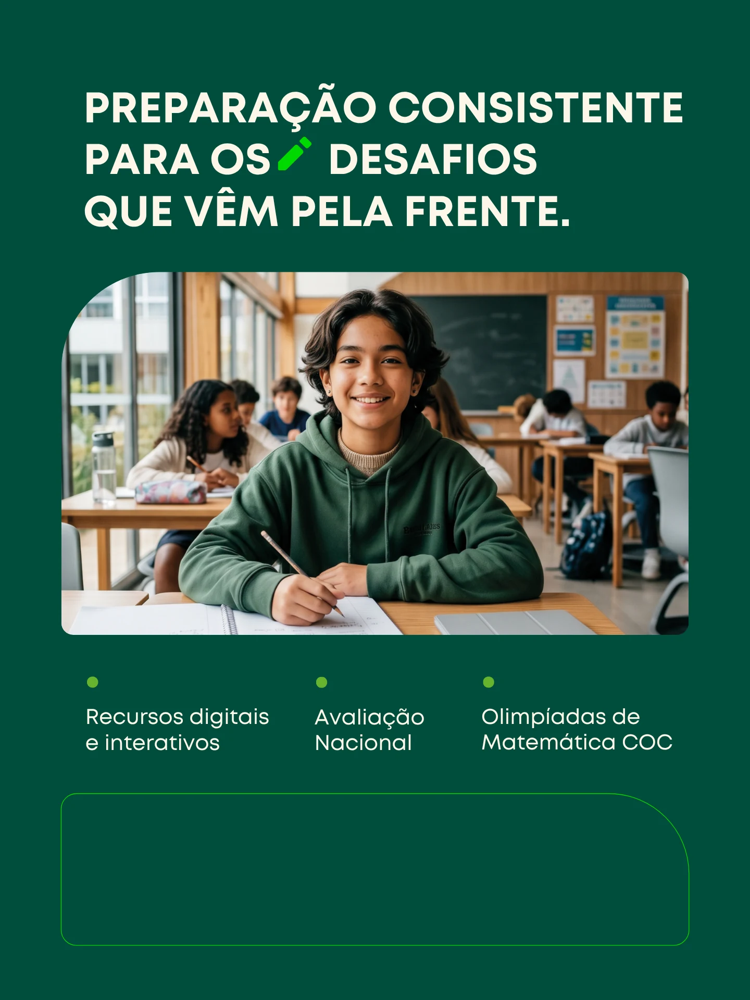
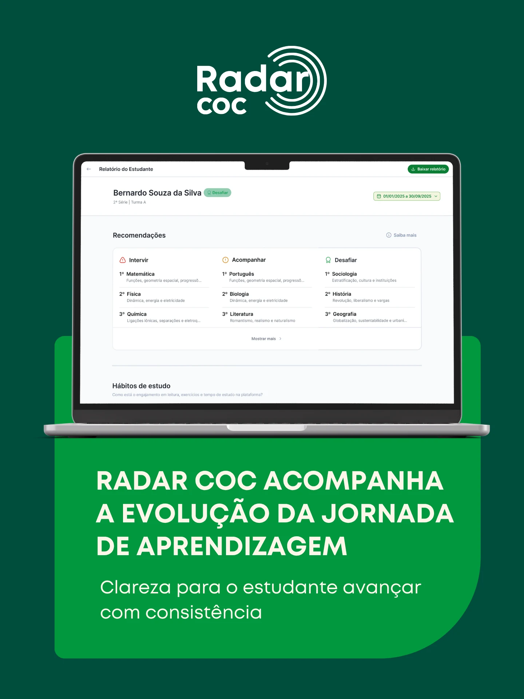

Material didático atualizado
Conteúdo alinhado à BNCC e integrado à rotina escolar.
Material didático, recursos digitais, avaliações e simulados apoiam a aprendizagem quando se conectam ao trabalho de professores, coordenação, alunos e famílias.
No Perini, os recursos do Sistema COC entram a serviço da proposta pedagógica e do desenvolvimento de autonomia.
Conteúdo alinhado à BNCC e integrado à rotina escolar.
Recursos para estudos, atividades e continuidade da aprendizagem.
Instrumentos para acompanhar o desenvolvimento do estudante e identificar oportunidades de melhoria.
Uso pedagógico dos recursos para fortalecer organização, responsabilidade e participação no próprio processo de aprendizagem.
Material e tecnologia fazem parte de uma proposta em que professores e coordenação seguem responsáveis pelo acompanhamento da trajetória do estudante.

Do Fundamental I ao Fundamental II, materiais, conteúdos digitais, videoaulas e ferramentas ampliam as possibilidades de aprendizagem. No Perini, esses recursos entram no trabalho de professores e coordenação.
Base, descoberta e confiança.
Aprofundamento, autonomia e novos desafios.






O Perini combina uma base acadêmica estruturada com recursos complementares escolhidos para ampliar a aprendizagem e a formação para a vida.

Jogos, desafios e experiências digitais ampliam as oportunidades de prática e apoiam o acompanhamento do professor.
Planejamento, responsabilidade, autonomia e escolhas conscientes entram na formação de forma conectada ao cotidiano.
Agende uma visita e entenda como os recursos do Sistema COC entram na rotina de cada etapa.